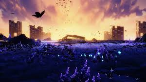
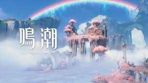
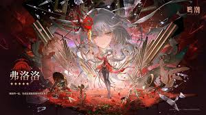
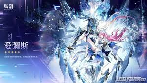
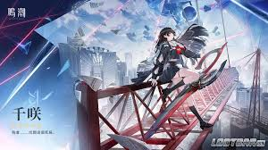

黑海岸
黑海岸是《鳴潮》中充滿神秘感的重要地區與勢力之一。 這裡給人的印象冷靜、深沉，帶有科技感與未知感，和一般城市或自然場景有明顯差異。
黑海岸常與情報、研究、未知力量以及世界真相有所關聯。 玩家接觸這個地區時，會感受到故事從單純冒險逐漸轉向更深層的謎團。
在視覺呈現上，黑海岸適合使用深藍、黑色與冷色系圖片，凸顯神秘、科技與未知的氛圍。
走進索拉里斯的未知世界，認識角色故事、探索地圖與養成方向
《鳴潮》是一款開放世界動作角色扮演遊戲。玩家扮演失去記憶的「漂泊者」， 在災變後的世界中展開旅程，探索不同地區、接觸各方勢力，並逐步揭開自身與世界之間的關聯。
遊戲的核心特色包含高速戰鬥、角色切換、聲骸收集與大世界探索。 玩家可以在戰鬥中使用不同角色的技能與共鳴解放，透過閃避、連段與隊伍搭配提升戰鬥節奏。
除了戰鬥之外，《鳴潮》的地圖探索也是重要內容。玩家能在不同地區中尋找寶箱、 挑戰敵人、收集素材，並透過任務與場景設計理解這個世界的背景。

黑海岸是《鳴潮》中充滿神秘感的重要地區與勢力之一。 這裡給人的印象冷靜、深沉，帶有科技感與未知感，和一般城市或自然場景有明顯差異。
黑海岸常與情報、研究、未知力量以及世界真相有所關聯。 玩家接觸這個地區時，會感受到故事從單純冒險逐漸轉向更深層的謎團。
在視覺呈現上，黑海岸適合使用深藍、黑色與冷色系圖片，凸顯神秘、科技與未知的氛圍。

黎那汐塔是充滿異國風格與藝術氣息的地區。相較於黑海岸的冷色調與神秘感， 黎那汐塔更強調華麗、浪漫與城市文化，展現《鳴潮》大世界中不同區域的風格變化。
這個地區適合用來呈現遊戲在場景美術上的細節。建築、街道、色彩與地形設計， 都能讓玩家在探索時感受到旅行般的體驗。
黎那汐塔的介紹可以搭配明亮、優雅或具有城市感的圖片，讓整體頁面在深色科技感之外， 多一些華麗與藝術氛圍。
拉海洛可以作為展現新區域探索感的代表地圖。它的介紹重點可以放在地區氛圍、 場景設計與探索特色，呈現《鳴潮》世界並非單一風格，而是由多種環境共同組成。
在介紹拉海洛時，可以從地形、色彩、建築與探索路線切入。 透過圖片與影片，讀者能更快理解這個地區帶來的視覺感受與冒險氣氛。
拉海洛適合放在黑海岸與黎那汐塔之後，形成三種不同風格的對照： 神秘科技、城市藝術，以及新區域探索。
《鳴潮》的大世界結合了戰鬥、解謎、素材收集與劇情推進。 玩家可以在地圖中挑戰敵人、尋找寶箱、收集角色培養素材，也能透過任務了解各地區的故事。
黑海岸、黎那汐塔與拉海洛分別呈現不同的場景風格。 透過地區之間的差異，玩家能感受到《鳴潮》世界觀的多樣性與探索魅力。
《鳴潮》的角色被稱為「共鳴者」。每位角色都有不同的個性、戰鬥方式與背景故事。 角色不只是戰鬥單位，也透過外觀設計、技能演出與劇情表現展現各自的魅力。

弗洛洛是一位具有強烈個人特色的角色，整體形象帶有神秘感與舞台感。 她給人的印象不是單純的戰鬥角色，而是具有表演感、故事性與獨特氣質的存在。
弗洛洛適合作為角色介紹區的重點人物。她的外觀設計鮮明，角色氛圍特殊， 能讓玩家在第一眼就留下深刻印象。
培養方向上，弗洛洛可以設定為輸出型角色。養成時可優先考慮暴擊率、暴擊傷害、 攻擊力與屬性傷害，讓她在戰鬥中維持穩定輸出。

愛彌斯適合從角色氣質與技能風格切入介紹。 她的形象可以呈現出冷靜、優雅或具有特殊能力的感覺，適合作為角色區的第二位介紹人物。
在隊伍中，愛彌斯可以依照玩法定位為輸出、輔助或功能型角色。 她的價值不只在於傷害，也可以透過技能循環與隊伍搭配提升整體表現。
培養方向上，如果偏向輸出，可以重視攻擊力、屬性傷害與暴擊數值； 如果偏向輔助，則可提高共鳴效率，讓技能釋放更加順暢。

千咲可以作為功能型或輔助型角色介紹。她的特色適合從外觀、個性與隊伍功能三個方向切入， 讓讀者理解她不一定只追求高傷害，也可能在隊伍中提供穩定支援。
輔助型角色通常能提升隊伍穩定度，讓戰鬥循環更順暢。 千咲可以放在「隊伍支援」或「新手培養建議」的位置，凸顯她在隊伍中的功能性。
培養方向上，千咲可以優先考慮共鳴效率、生命值、治療加成或其他功能向詞條。 這樣能和弗洛洛、愛彌斯形成差異，讓角色區的定位更加完整。
角色培養主要包含角色等級突破、技能升級、武器提升與聲骸搭配。 玩家需要透過探索地圖、挑戰敵人、完成副本或參與活動取得素材。
不同角色需要的素材會依版本與角色設定而改變，因此實際素材名稱建議以遊戲內資料為準。 這裡以養成方向整理，方便快速理解每位角色的培養重點。
| 角色 | 推薦定位 | 培養素材方向 | 聲骸／詞條方向 |
|---|---|---|---|
| 弗洛洛 | 主輸出／副輸出 | 角色突破素材、技能升級素材、怪物掉落物、週本素材 | 暴擊率、暴擊傷害、攻擊力、屬性傷害 |
| 愛彌斯 | 輸出／輔助 | 角色突破素材、技能升級素材、地區採集物、怪物掉落物 | 攻擊力、屬性傷害、共鳴效率、暴擊數值 |
| 千咲 | 輔助／功能型角色 | 角色突破素材、技能升級素材、週本素材、功能型養成素材 | 共鳴效率、生命值、治療加成、功能向詞條 |
輸出角色需要兼顧暴擊率、暴擊傷害與攻擊力； 輔助角色則要注意技能循環是否順暢。若技能無法穩定施放，實戰表現也會受到影響。
面板數值會受到武器、聲骸、隊伍搭配與玩家操作習慣影響。 下方數值作為新手培養方向參考，實際仍可依角色玩法調整。
弗洛洛若作為輸出角色，重點是讓傷害穩定。 前期可以先提升角色等級、武器等級與主要技能，中後期再追求更好的聲骸詞條。
愛彌斯的培養較有彈性。隊伍缺少輸出時，可以偏向傷害培養； 若隊伍已有主要輸出，則可以提高共鳴效率，讓技能循環更加穩定。
千咲若作為輔助角色，主要價值在於支援隊伍。 她可以透過技能循環、恢復、增益或功能效果，讓隊伍在探索與戰鬥中更加穩定。
如果資源有限，建議先集中培養一位主要輸出角色，再培養一位輔助或功能型角色。 不要一開始就把資源平均分散到太多角色身上，否則每個角色都難以發揮完整效果。
前期優先提升角色等級、武器等級與主要技能。 中後期再慢慢調整聲骸套裝、主詞條與副詞條，讓角色面板逐漸成形。
想了解更多角色資訊、版本活動或官方公告，可以參考以下連結。
角色培養數值會隨版本更新而調整，實際養成時建議以遊戲內資料與最新攻略為準。